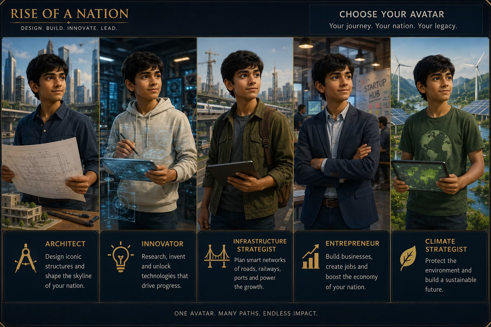
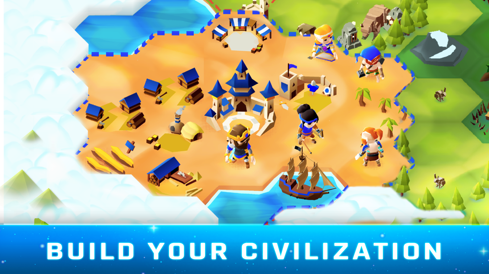
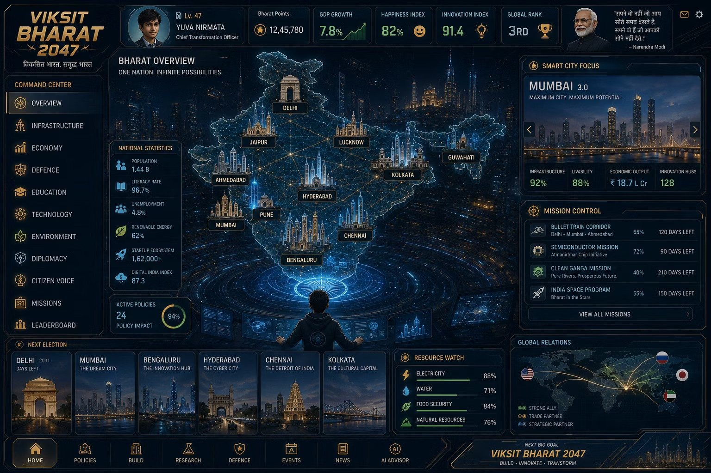

01
Choose a role
Create an avatar and select a leadership identity that shapes early missions and rewards.
A strategic nation builder for the next generation. Players begin with one district, balance the systems that make society work, and build a vision for Viksit Bharat 2047.
You do not play a leader. You become one.
The player creates an avatar and chooses how they want to contribute: architect, innovator, infrastructure strategist, entrepreneur or climate strategist. The role is an identity and progression lens, not a restriction. Every player must still understand that national progress depends on balanced choices.

Both production variants share the same emotional and strategic spine. They differ in session structure, persistence and technology, not in the promise made to the player.
Create an avatar and select a leadership identity that shapes early missions and rewards.
Receive a limited budget, constrained services and citizens with clear unmet needs.
Identify bottlenecks across transport, skills, energy, health, food and employment.
Build, upgrade, research and sequence investments within real resource limits.
Jobs, trust, pollution, mobility and productivity respond to the player's choices.
A thriving district unlocks a city, then a state path and ultimately the national layer.
The game becomes interesting when there is no single correct investment. Education creates skilled workers, but workers need jobs. Industry creates revenue, but requires energy and transport. Growth increases demand on health, housing and food.
Missions translate broad ambitions into concrete objectives, dependencies and outcomes. Each can become a regional scenario in Variant 1 or a persistent multi-stage programme in Variant 2.
Reuse the proven Unity, hex-grid and turn-based foundation, then redirect it from conquest toward constructive regional development.
Each playable world becomes a district or regional challenge. The player explores a hex map, establishes services, develops resources, deploys specialist teams and completes a national mission. Results feed a persistent India progression layer between sessions.

The sequence keeps the readability of Hexapolis while changing the fantasy, content and victory conditions around modern development.
Example: connect two towns, raise employment and reach 60% clean energy within 24 turns.
Survey terrain, population, water, transport gaps, local resources and underserved settlements.
Place a hub, roads, basic energy, agriculture and essential public services.
Invest in research, skills, industry or sustainability according to the region and role.
Adapt to drought, congestion, budget pressure, workforce shortages or citizen concerns.
Convert performance into Bharat Points, technology progress and state-level contribution.
Route 1 is not a reskin. Its advantage comes from retaining low-level production infrastructure while replacing the player-facing economy, content and progression.
A persistent metagame gives short worlds meaning and creates the sense of India expanding through accumulated player achievement.
Complete focused missions, earn ratings and discover regional modifiers.
Unlock a sequence of regions, develop a specialization and compare performance.
Advance flagship programmes, fill the 2047 roadmap and unlock new technology eras.
The Hexapolis advantage disappears if the core requirement becomes a continuously running multi-city economy. That changes the state model, interface, progression and content pipeline deeply enough that a bespoke foundation becomes more honest.
Build the client's persistent city, state and nation-management vision directly, without constraining it to a match-based hex game.
The player begins with one district, then manages a portfolio of towns and cities over time. Buildings complete persistently, policies alter system behavior, events demand trade-offs and national programmes require coordinated investment across regions.

The player does not finish a world. They return to a living system, review what changed and make the next set of decisions.
See completed construction, resource changes, citizen feedback and emerging risks.
Compare cities and identify where mobility, power, skills or health constrain progress.
Fund upgrades, move specialist capacity and reserve resources for national missions.
Choose incentives and programmes that alter costs, growth, trust and sustainability.
Handle a water shortage, skills gap, migration spike or infrastructure failure.
Track state standing, national goals, friends and the next milestone toward 2047.
This route gives the initial client vision room to breathe, but every system below must be scoped and balanced from the ground up.
Specialize towns and cities, move resources between them and resolve local needs without losing the national view.
Use a limited number of legible policy levers that affect tax income, services, growth, trust and sustainability.
Schedule upgrades and programmes that complete over time, with acceleration earned through good planning rather than friction.
Explain dependencies, forecast consequences and translate policy language into age-appropriate choices and feedback.
Compare states on balanced public metrics, avoiding a single wealth score that rewards only aggressive growth.
Run shared missions, anniversary moments and time-limited goals that let individual progress contribute to collective outcomes.
Three.js provides the rendered world, not the whole product. The game also requires a deterministic simulation layer, persistent services, content configuration and a native wrapper strategy.
The routes use the same budget envelope differently. Variant 1 buys more content and deadline confidence. Variant 2 buys closer vision fidelity but requires a narrower first release.
| Decision area | Variant 1 · Hexapolis Evolution | Variant 2 · Bespoke Nation Builder |
|---|---|---|
| Session rhythm | Complete 8-12 minute regional scenarios | 3-5 minute check-ins plus longer planning sessions |
| Core interaction | Turn-based decisions on a compact hex map | Persistent city views, national map and dashboard |
| Progression | Match results feed state and national metagame | One continuous economy across cities and programmes |
| Technology | Unity and existing Hexapolis foundations | Three.js, web application, backend services and Capacitor |
| Reuse | High at engine and interaction level; low at content level | Genre knowledge and algorithms only; core product is new |
| Content capacity | More missions and regional scenarios inside the envelope | Fewer but deeper systems in the initial release |
| Primary risk | Over-customizing until reuse no longer saves time | Underestimating simulation, services and responsive UX |
| Deadline confidence | Higher for an early-2027 release | Viable only with strict MVP scope or staged launch |
| Best when | The anniversary date and polished mobile play are fixed | The persistent dashboard vision is the non-negotiable priority |
It is the most defensible route to a polished anniversary product. The 3-4 week MPP should also test one persistent dashboard screen. If that screen proves more compelling than the regional match, the project can deliberately move to Variant 2 before full production rather than discovering the mismatch later.
Final quantities depend on the selected variant, but each workstream needs a committed owner and acceptance criteria.
Core loop, economy, sector dependencies, progression, mission templates, balancing model and complete game design documentation.
OUTPUT · Approved design baseline and playable economy modelModern India art direction, environments, buildings, avatar roles, UI, animation, audio, narrative framing and initial missions.
OUTPUT · Launch-ready visual system and first content setCore simulation, world interaction, UI, device support, save behavior, performance and platform-specific release builds.
OUTPUT · Production game clients for agreed platformsProfiles, cloud save, analytics, remote configuration, live content hooks and competition services where included.
OUTPUT · Operable backend and environment configurationAge-appropriate onboarding, readable information hierarchy, localization framework and initial agreed languages.
OUTPUT · Validated mobile UX and localized content pipelineTest planning, device matrix, balancing telemetry, compliance support, store/web preparation and launch candidate validation.
OUTPUT · Approved release candidate and deployment packageBoth variants can be shaped to this envelope, but they do not deliver the same amount of product. Variant 1 uses more of the budget on client-facing art, missions and progression. Variant 2 must reserve more for new core systems, responsive UI, services and technical validation.
A fixed price and milestone plan follow route selection, content inputs and acceptance of the first-release boundary.
Confirm audience, platform, content governance, first-release scope and the question the MPP must answer.
DECISION · Variant 1, Variant 2 or a specifically bounded hybridOne representative build-and-balance loop, one national mission, target visual quality and a tested mobile interaction model.
GATE · Validate fun, clarity, technical route and production estimateBuild or adapt core systems, establish the economy, complete art pipelines and deliver a representative vertical slice.
GATE · End-to-end playable product slice on target devicesProduce launch content, integrate persistence and analytics, balance progression, localize and test at scale.
GATE · Feature complete and content completeOptimize, resolve defects, complete compliance, prepare deployment and support the agreed launch window.
TARGET · Disciplined initial release, followed by planned expansionThe commercial structure limits early risk for both parties. A preliminary agreement funds the prototype; the full production commitment follows prototype delivery, route confirmation and final scope approval.
Approve the prototype objective, delivery window, client inputs, review process and ownership of preliminary work.
$40K prepaymentNOXGAMES delivers the agreed 3-4 week MPP demonstrating the core loop, visual quality and technical route.
Prototype deliveryUse prototype findings to lock the selected variant, feature list, release date, acceptance criteria and final price.
Production sign-offExecution of the final development contract triggers team reservation and the full production programme.
$100K prepaymentFollowing delivery and acceptance of the contracted release, the remaining agreed project price becomes payable.
Remaining balanceNOXGAMES is open to fixing the final release deadline in the development contract and agreeing a price reduction if NOXGAMES misses that deadline.
Use the 3-4 week MPP to compare one polished regional mission with one persistent return screen. That will produce evidence for the route decision, a credible production plan and a scope that can survive the anniversary deadline.